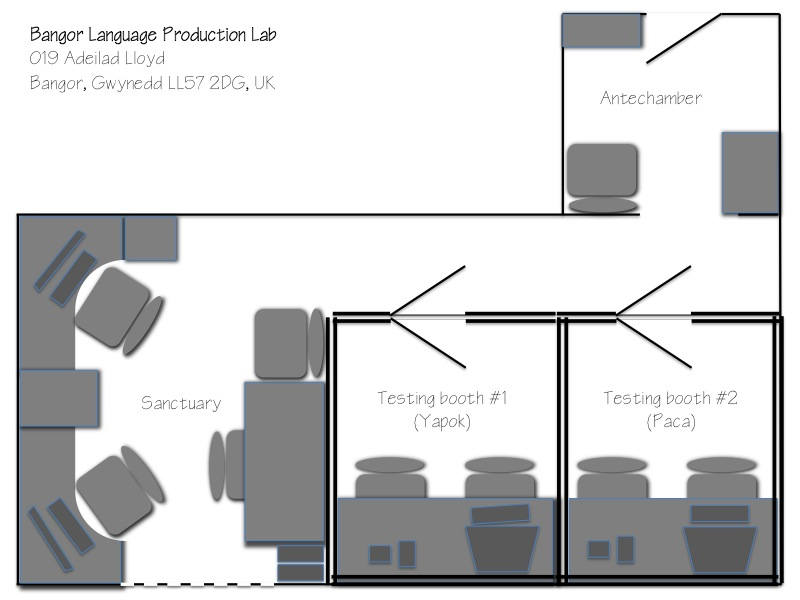

Location: |
019 Adeilad Lloyd |
| |
|
Floorplan: |
 |
| |
|
Testing booth specs:
|
|
Capacity: |
2 booths x (1 participant + 1 investigator per booth) |
Sound-attenuation: |
Booths are acoustically isolated from each other and from the outside world (~ -60dB within each booth) to prevent outside stimuli from contaminating experiments, and maximize signal-to-noise ratio for recording and auditory perception |
Computers: |
2 x Intel i3 desktop with discrete graphics and sound, and non-networked modes for data collection and networked modes for data backup |
Monitors: |
2 x 17" 160Hz CRT monitor for millisecond accuracy in visual display timing (unfortunately, even fast-responding LCDs still do not offer temporal precision because they fail to sync their refresh times with the computer) |
Microphones: |
2 x Shure SM10a headmounted |
Audio recorders: |
2 x Marantz PMD-661; recordings combine input from the microphone with input from the computer, allowing us to verify timings offline |
Voicekeys: |
2 x Custom-built, based on Tyler et al's (2005, BRM) Delayed Trigger Voice Key, for maximum sensitivity when detecting of speech onsets with minimal vulnerability to lipsmacks |
Experiment-running software: |
PsychoPy and E-Prime, by default; reconfigurable to any PC-based software, subject to hardware requirements and user expertise |
Other: |
1 x each of the above items (except the PC and soundbooth), so that research can continue if any part should fail, and we can easily expand while maintaining standard hardware |
|
|
|
In-lab workspace specs:
|
|
Capacity: |
4 people, comfortably |
Windows: |
1 |
Computers: |
1 x Intel i5 for computationally intensive tasks 1 x Intel i3 for normal work All lab computers are named after very low-frequency mammals. |
Monitors: |
2 x 21" LCD monitors |
Expansion: |
2 x spaces for students to bring their own laptops |
Data backup: |
1 x 6TB NAS |
Laminator: |
1 x |
Label maker: |
1 x |
Decoration: |
6 x Soviet work posters, with inspirational messages such as, "Love books, they are the source of knowledge," and "Work does not stop at night." |
Other: |
Workspace is isolated from the testing rooms so
that participants coming and going should neither distract us nor see
what we're working on behind the scenes |